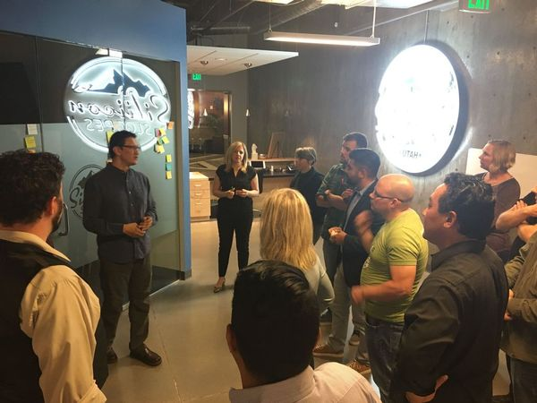
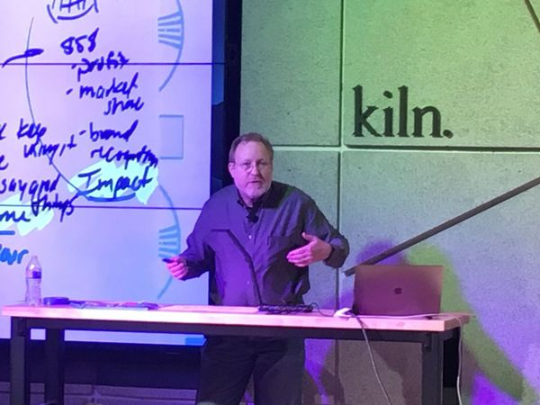
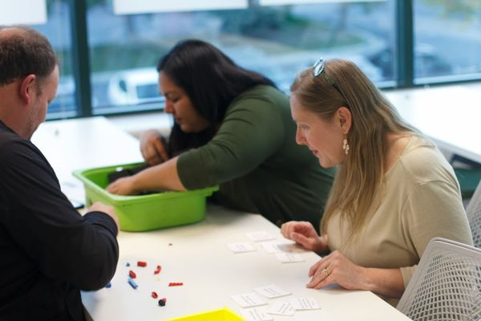
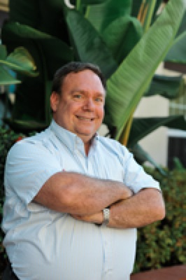
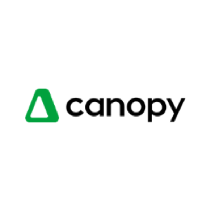
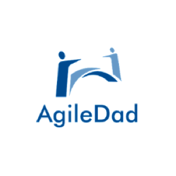
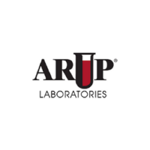
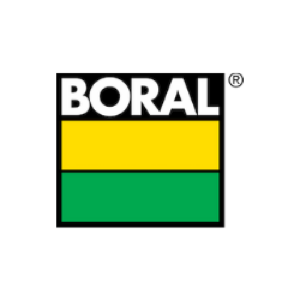

We facilitate networking, collaboration, and mentoring for aspiring and experienced professionals who are trying to make the world a more agile, adaptive, and future-ready place. Although centered in Utah, we welcome professionals from all over the world to join us. Membership is free.
We can’t wait to see you at an upcoming event! Below you’ll find not only upcoming Utah Agile events, but also other related meetups, trainings and events that are relevant to doing business in more agile and lean ways. Explore recordings of our past meetups and conferences below.
Explore our past meetups on a variety of topics, including scrum, kanban, retrospectives, leadership, transformation, organizational change, technical practices, product thinking, and so much more.
Browse our recorded, past Meetup events on YouTube. To see a complete list of past events visit us on Meetup.
We’re not just agile, we’re Utah Agile. We're here to unite Utah's agile community, and beyond, by facilitating networking, collaboration, and mentoring for aspiring and experienced professionals trying to make the world a more agile place.
Although centered in Utah, we welcome professionals from all over the world to join us. Membership is free.
Those who participate in any Utah Agile program or event qualify for Scrum Educational Units (SEUs) through Scrum Alliance (1 SEU per hour of participation).
The Agile Manifesto was born out of the peaks of Snowbird—its roots right here in Utah. And, as the slopes of Utah generate more and more successful businesses of all types and sizes who proudly call Utah their home, our community has continued to grow.
Here you'll find a unified voice and event schedule regarding all things lean and agile in the Utah professional community.
As a 501(c)6 nonprofit organization, we look forward to building out this community in ways we haven’t thought of yet—ways which you’ll show us as you collaborate with us. It’s important that the entire agile community in Utah unify and show the rest of the world why Utah is the home of innovation.



Founder & Executive Director
Executive director Utah Agile, author, trainer, coach
VP Community
I create psychologically safe spaces where teams can do their best work. Co-founder Inclusive Agile

President of AgileDad, Certified Scrum Trainer & master of humanizing work.
Business agility strategist, DevOpsDays SLC hostess & corporate human systems anthropologist
Ways to plug into the Utah Agile community.
Utah Agile events count toward Scrum Education Units (SEUs). Every hour you spend with us counts as 1 SEU.
Scrum Alliance certification holders are responsible for seeking out opportunities to earn SEUs for certification renewal, as well as logging SEUs in their Scrum Alliance account.
The Scrum Alliance provides a great resource page for managing your SEUs and continuing certification.
In most cases, Utah Agile events also count as continuing education units (CEUs) for other certification bodies that accept self-reported education, like PMI.
Utah Agile offers monthly opportunities to connect through educational Meetup events, as well as informal "Agile Coffee" gatherings via Zoom. In between events, members can communicate within Utah Agile's Slack space.
Seeking peer advice? Offering to coach coaches? Have a resource you would like to share? Seeking a resource? One of the many benefits of subscribing includes an invitation to join Utah Agile's Slack space and following a variety of channels.
We credit our membership with making Utah Agile the amazing professional and collaborative community we are. Have a specific topic or trend you'd like to share? Let us know! Here’s how:
Before sharing, please take a moment to review our past speakers and topics. Next, send your presentation proposal to info@utahagile.org and include the following:
Tell us how you'd like to volunteer your time and expertise in support of this professional community. Volunteer opportunities may arise based on operational needs, the needs of our community, or event logistics. Utah Agile is always seeking volunteer assistance with the following:
Send your volunteer offer to volunteer@utahagile.org.
Sponsoring a Utah Agile event provides increased brand awareness at both virtual and in-person meetups, speaker series events and networking activities. Whether you're recruiting new talent, promoting your brand or striving to improve your organization's effectiveness through lean-agile approaches, sponsoring Utah Agile events is an easy and effective opportunity.
See which companies have sponsored us in the past…
We are meeting again in-person and can't wait to gather at some of the amazing collaboration spaces our Utah businesses have to offer. Event sponsors can support events in various ways by:
To discuss sponsoring or hosting in-person events, please drop us a line at info@utahagile.org.



